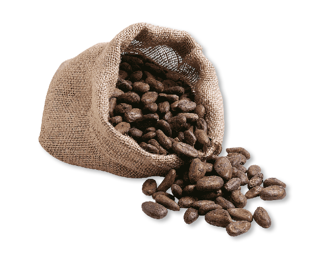

¡Bienvenido a nuestra web!
Alma del campo es un café que brinda experiencias únicas, su proceso de fermentación y suelo de siembra, hacen que sus notas sean potentes, con diferencia y exclusividad en su sabor. Desde notas amargas, dulces, suaves, nuestro café puede ser preparado en diferentes métodos para adaptarse a todo tipo de gustos.
Aquí podrás encontrar:
- Métodos de preparación
- Todos nuestros productos
- Información sobre nuestro proceso de siembra